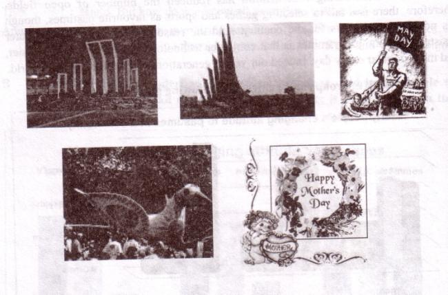
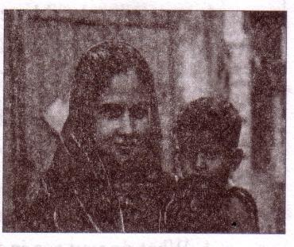
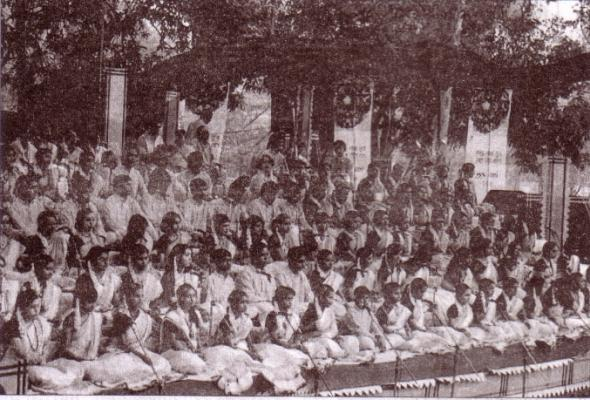

Unit Three
Events and festivals
26
Learning outcomes
After we have studied this unit, we will be able to
-
talk about events and festivals.
-
ask and answer questions and give opinions in a logical sequence.
-
infer meanings from the context.
Lesson 1: Mother's Day
A . Look at the picture and discuss the questions.
1. What do you think the woman is to the child?
2. Why is she holding the child on her flank?
3. Can a mother be compared to anybody?
"She can be compared with no other,
This lovely lady is none but my mother."

B . Listen to the teacher/CD and answer the questions that follow.
|
Listening text 2 |
C . Choose the correct answer.
1. According to ancient Greek myths Rhea is the
a. mother of gods.
b. goddess of love.
c. goddess of wealth.
d. goddess of health.
2. The name of Jesus Christ's mother was
a. Rhea.
b. Mary.
c. Anna .
d. Anna Junior.
3. Julia Ward Howe was
a. Dutch.
b. English.
c. Australian.
d. American.
4. Mother's Day was first announced as a formal holiday in the USA in
a . 1872.
b. 1905.
c . 1910.
d. 1914.
5. In 1914 the American president was
a. Roosevelt.
b. Ford.
c. Nixon.
d. Wilson.
6. Which country doesn't celebrate Mother's Day on the 2nd Sunday of May?
a. Denmark
b. The UK
c. Italy
d. Turkey
D . Listen to the text again and answer these questions.
1. What country first observed Mother's Day as a national holiday?
2. When is Mother's Day now celebrated by most of the countries in the world?
28| 3. How is Mother's Day usually observed? 4. Why should we observe Mother's Day? |
E . Write a paragraph by answering each of the following questions.
1. Do you help your mother with her housework? How?
2. Do you celebrate Mother's Day? If yes, when and how?
Lesson 2 : May Day
A . Look at the picture and talk about it.
1. What do you see in the picture?
2. Can you relate any historical event to this picture? What happened on this day?
B . Read the text and answer the questions that follow.
May Day or International Workers Day is observed on May 1 all over the world today to commemorate the historical struggle and sacrifices of the working people to establish an eight-hour workday. It is a public holiday in almost all the countries of the world.
Since the Industrial Revolution in the 18th and 19th centuries in Europe and the US, the workers in mills and factories had been working a long shift, fourteen or even more hours a day.
On May 1st in 1886, inspired by the trade unions. half of the workers at the McCormic Harvester Company in Chicago went on strike demanding an eight-hour workday. Two days later, a workers' rally was held near the McCormic Hervester Company and about 6000 workers had joined it. The rally was addressed by the labour leaders. They urged the workers to stand together, to go on with their struggle and not to give in to their bosses. Just at this moment some strikebreakers started leaving the meeting place. The strikers went down the street to bring them back. Suddenly about 200 policemen attacked them with clubs and revolvers. One strike was killed instantly, five or six others were seriously wounded and many of them were badly injured.
The events of May 1, 1886 is a reminder that workers will continue to be exploited until they stand up and speak out to gain better working conditions, better pay and better lives.
Notes
| 1. Industrial Revolution: the period, especially in the 18th and 19th centuries Europe, when machines were invented and first factories were established. 2. Trade Union: an organization that represents workers of mills and factories. |
Questions
1. What does May Day refer to?
2. How long did the workers have to work a day before the May 1 strike?
3. How many workers were victimized for taking part in the strike?
4. Why did the workers in Chicago go on a strike?
5. What do you learn from the events of May l, 1886?
C Fill in the blanks with the verbs given in the box. Put them into their correct forms.
|
Add |
Arrive |
Begin |
do |
Hear |
|
Live |
Send |
Support |
tread |
Work |
Tania is a poor garment worker. She [dash] in a big garment factory in Gazipur. She [dash] in a slum with a few fellow workers. She works eight hours a day on a monthly salary of Tk. 3000/-. She does overtime to[dash] some more money to her income. If she can save something, she[dash] it to her father to[dash] the family.
One day Tania was busy [dash] her work in the factory. Suddenly she [dash] someone shouting "Fire! Fire!" The workers were panic-stricken and everyone [dash] to rush to the stairs. There were not enough staircases in the factory building. So some workers were [dash] under the foot and some other were injured in some other ways. However, the fire brigade [dash] there in minutes and nothing untoward happened.
D . Now read the completed passage in C silently and answer the following questions.
1. Do you think Tania's monthly salary is enough for her work?
2. Does Tania live in a hygienic place? Is it good for her health? What may happen if she continues living there?
3. Is the factory safe enough for workers to work in? Why do you think so?
4. Do you have any suggestions for safety of factory workers ? If so, what?
30Lesson 3 : International Mother Language Day - 1
A . Look at the picture and talk about it.
1. What's the picture about?
2. Where do you think it is?
3. Why was it built?
B . Read the text.
21 February is a memorable day in our national history. We observe the day every year as International Mother Language Day. The day is a national holiday.On this day, we pay tribute to the martyrs who laid down their lives to establish Bangla as a state language in undivided Pakistan in 1952. This is known as the Language Movement.
The seed of the Language Movement was sown on 21 March 1948 when Mohammad Ali Zinnah, the then Governor General of Pakistan, at a public meeting in Dhaka declared that Urdu would be the only official language of Pakistan. The declaration raised a storm of protest in the eastern part of the country. The protest continued nonstop, gathering momentum day by day. It turned into a movement and reached its climax in 1952. The government outlawed all sorts of public meetings and rallies spot it.
The students of Dhaka University defied the law and they brought out a peaceful protest procession on 21 February 1952. When the procession reached near Dhaka Medical College, the police opened fire on the students, killing Salam, Rafiq, Barkat and Jabbar. This kindled the sparks of independence movement of Bangladesh.
C . Complete the chart.
Time What happened
|
Time |
What happened |
|
1947 |
- |
|
1948 |
- |
|
1952 |
- |
D . Match the words with their meanings.
|
Words |
Meanings |
| Tribute Climax Outlaw Defy Provoke Relent momentum |
|
E . Answer these questions.
1. Why do we observe 21 February as the International Mother Language Day?
2. What happened when Urdu was declared as the only official language of Pakistan?
3. "The seed of independence was sown on 21 February 1952". Do you agree with the comment? Why?
Lesson 4 : International Mother Language Day – 2
A . Talk about these questions.
1. When did the International Mother Language Day celebration begin?
2. What does the abbreviation UNESCO stand for?
3. What is the other name of 21 February?
B . Read more about International Mother Language Day.
21 February has been observed as Shaheed Diboshevery year throughout the country in remembrance of the martyrs of language movement of 1952. The occasion begins at the early hours of the day with mourning songs that recall the supreme sacrifices of our language martyrs. People wear black badges and go to the Shaheed Minarbarefoot in procession, singing mourning songs. They place wreaths at the Minar. Many of them visit the graves of the martyrs at Azimpur graveyard and pray for them. They also attend various programmes organized in remembrance of the language martyrs.
The UNESCO (United Nations Educational, Scientific and Cultural Organization) on 17 November in 1999 proclaimed February 21 as the International Mother Language Day in recognition of the sacrifices of the martyrs for the rightful place of Bangla. The day is now annually observed worldwide to promote awareness of linguistic and cultural diversity and multilingualism.
32C . Match the words/phrases in the table with their meanings.
|
Words/phrases |
Meanings |
| Wreath in remembrance of proclaim promote diversity multilingualism in recognition of |
|
D . Read the text in B again and answer these questions.
1. Why is 21 February called Shaheed Dibosh'?
2. Why do people go to the Shaheod Minar? How do they go there?
3. Why is 2? February now observed throughout the world every year`?
E . Complete the passage with suitable words.
On 21 February 1952 [dash] was Shaheed Minar at a place between Dhaka Medical College and Dhaka University [dash] to establish Bangla as a state [dash] of Pakistan. All subsequent movements [dash] the struggles for independence had their origin from the historic language [dash].Shaheed Minar is the [dash] of the supreme sacrifice [dash] the mother tongue.
F . Write briefly how you observed this year's 21 February at your school.
Lesson 5 : Independence Day
A . Look at the picture and ask and answer the questions about it.
1. What can you see in the picture?
2. Where is it?
3. Why was it built?
B Read the text.
26 March, our Independence Day, is the biggest state festival. The day is Celebrated every year in the country with great enthusiasm and fervour. It is a national holiday. All offices, educational institutions, shops and factories remain closed on this day. The day begins with 31 gunshots.
33Early in the morning the President and the Prime Minister on behalf of the nation place floral wreaths at the National Mausoleum at Savar. Then diplomats, political parties social and cultural organizations, and freedom fighters pay homage to the People from all walks of life also come there in rallies and processions. There are several cultural programmes throughout the day, highlighting the heroic struggle and sacrifice in 1971.
The country also witnesses a smartly dressed parade of defense forces, border guards, police ansars and the VDP (Village Defense Party) at the National Parade Ground near the National Parliament. In Bangabandhu Stadium, school children, scouts and girl guides take part in various displays to entertain thousands of spectators. The educational institutions also organize their individual programmes. Sports meets and tournaments are also organized on the day, including the exciting boat race in the river Buriganga.
In the evening, all major public buildings are illuminated with colourful lights. Bangla Academy, Bangladesh Shilpakala Academy and other socio-cultural organizations hold cultural functions. Similar functions are also arranged in other places in the country.
C . Match the words with their meanings.
|
Words |
Meanings |
| Fervour Alike Spectator Displays illuminate |
|
D . Choose the best answer.
1. Our biggest state festival is
a. Victory Day.
b. Shaheed Dibosh.
c. Pahela Baishakh.
d. Independence Day.
2. The celebration of Independence Day begins with
a. processions.
b. gunshots.
34c. placing wreaths at the National Memorial.
d. the display of parades by defense forces.
3. The National Mausoleum is
a. on Dhaka University campus.
b. at Ramna Park.
c. at Savar.
d. near Dhaka Medical College.
4. On Independence Day the National Parade is held
a. at the National Parade ground.
b. in the streets.
c. in the decorated vehicles.
d. in Bangabandhu Stadium.
E . Write, in brief, how you celebrated this year's Independence Day at your school.
Lesson 6: Pahela Boishakh
A . Look at the picture. Then ask and answer the questions about it.

1. What's the picture about?
2. Where do you think it is?
3. What are people doing?
35B . Read the text.
'Pahela Boishakh' is the first day of Bangla new year. The day is a public holiday. This day has a special significance for us as it forms a part of Bangalee culture and tradition. People from all walks of life, irrespective of their ethnic identity or religious beliefs celebrate the day with traditional festivities. On this day, the whole of Bangladesh is in a festive mood. The day inspires people to start life with renewed hopes and inspirations.
Every year the day is celebrated traditionally. People wake up early in the morning have a bath and wear their traditional clothes. Women wear white saris with red borders and adorn themselves with colourful churis and flowers, while men dress , themselves with pajamas and punjabis. It is a day when people love eating traditional food.
The most colourful event of the day is held in Dhaka. Early in the morning, people in hundreds and thousands pour in from all directions to attend the cultural function a Ramna Batamul organized by Chhyanata. The cultural programme begins just with sunrise and the renowned artists of the country take part in the programme that start with the famous Tagore-song Esho-he-Boishakh, Esho Esho ........ . Artists also sing traditional folk songs, and display classical dances with the rhythm of musical instruments.
People also come to join the colourful processions, the biggest carnival of the country organized by the Fine Arts students of Dhaka University. The procession usually displays the traditional practices of Bangalee culture. The masks and wreaths won by the people are so fascinating! Often they symbolize contemporary worries or happiness in the national life. It attracts an increasing number of foreign tourists every year.
The day is also observed all over the country. Different social and cultural organizations and educational institutions celebrate the day with their own cultural programmes.
On this day, newspapers bring out special supplements. There are also special programmes on the radio and television.
The celebration of Pahela Boishakh marks a day of cultural unity for the whole nation irrespective of caste and creed.
C . Ask and answer these questions in pairs.
1. Do you go out in the morning of Pahela Boislrakh? If you do, where do you go? If not, what do you do?
2. What kind of food do you eat in the morning of Pahela Boishakh?
3. Do you wear any special clothes on this occasion?
36D . Complete the passage with suitable words.
The word Pahela means the first and Boishakh is the [dash] month Bangla calendar. The day is observed not [dash] in Bangladesh but [dash] in some other parts of the world. It is celebrated in West Bengal, Assam and Tripura. It is also [dash] in Australia and the UK. In Australia, the largest [dash] for Bangla new year is the Sydney Boishakhi Mela held [dash] Sydney Olympic Park. In England, the Bangalees [dash] celebrate the day with a street [dash] in London. It is the [dash] Asian festival in Europe, [dash] Bangladesh and West Bengal.
E . Describe your own cultural or religious festival that you celebrate. You can use the following words. You can also use other words relevant to the festival.
|
colourful |
special |
traditional |
religious |
dance |
|
cultural |
flowers |
food |
songs |
festive |